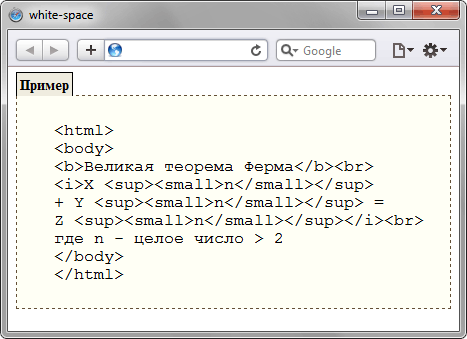

white-space
Свойство white-space устанавливает, как отображать пробелы между словами. В обычных условиях любое количество пробелов в коде HTML показывается на веб-странице как один. Исключением является элемент <pre>, помещённый в этот контейнер текст выводится со всеми пробелами, как он был отформатирован пользователем. Таким образом, white-space имитирует работу <pre>, но в отличие от него не меняет шрифт на моноширинный.
Краткая информация
| Значение по умолчанию | normal |
|---|---|
| Наследуется | Да |
| Применяется | Ко всем элементам |
Синтаксис
white-space: normal | nowrap | pre | pre-line | pre-wrapЗначения
- normal
- Текст в окне браузера выводится как обычно, переносы строк устанавливаются автоматически.
- nowrap
- Пробелы не учитываются, переносы строк в коде HTML игнорируются, весь текст отображается одной строкой; вместе с тем, добавление <br> переносит текст на новую строку.
- pre
- Текст показывается с учётом всех пробелов и переносов, как они были добавлены разработчиком в коде HTML. Если строка получается слишком длинной и не помещается в окне браузера, то будет добавлена горизонтальная полоса прокрутки.
- pre-line
- В тексте пробелы не учитываются, текст автоматически переносится на следующую строку, если он не помещается в заданную область.
- pre-wrap
- В тексте сохраняются все пробелы и переносы, однако если строка по ширине не помещается в заданную область, то текст автоматически будет перенесён на следующую строку.
Действие значений на текст представлено в табл. 1.
| Значение | Перенос текста | Пробелы |
|---|---|---|
| normal | Переносится | Не учитываются |
| nowrap | Не переносится | Не учитываются |
| pre | Не переносится | Учитываются |
| pre-line | Переносится | Не учитываются |
| pre-wrap | Переносится | Учитываются |
Пример
<!DOCTYPE html>
<html>
<head>
<meta charset="utf-8">
<title>white-space</title>
<style>
.example {
border: 1px dashed #634f36; /* Параметры рамки */
background: #fffff5; /* Цвет фона */
font-family: "Courier New", Courier, monospace; /* Семейство шрифта */
padding: 7px; /* Поля вокруг текста */
margin: 0 0 1em; /* Отступы */
white-space: pre; /* Учитываются все пробелы и переносы */
}
.exampleTitle {
border: 1px solid black; /* Параметры рамки */
border-bottom: none; /* Убираем линию снизу */
padding: 3px; /* Поля вокруг текста */
display: inline; /* Отображать как встроенный элемент */
background: #efecdf; /* Цвет фона */
font-weight: bold; /* Жирное начертание */
font-size: 90%; /* Размер шрифта */
margin: 0; /* Убираем отступы */
white-space: nowrap; /* Переносов в тексте нет */
}
</style>
</head>
<body>
<p class="exampleTitle">Пример</p>
<p class="example">
<html>
<body>
<b>Великая теорема Ферма</b><br>
<i>X <sup><small>n</small></sup>
+ Y <sup><small>n</small></sup> =
Z <sup><small>n</small></sup></i><br>
где n - целое число > 2
</body>
</html>
</p>
</body>
</html>Результат данного примера показан на рис. 1.

Рис. 1. Применение свойства white-space
Объектная модель
Объект.style.whiteSpace
Примечание
Браузер Internet Explorer до версии 7.0 включительно не поддерживает значения pre-line и pre-wrap. Для <textarea> значения normal и pre ведут себя как pre-wrap, а значение nowrap ведёт себя как pre-line.
Opera до версии 9.5 не поддерживает значение pre-line. Для <textarea> значения normal и pre ведут себя как pre-wrap, а значение nowrap ведет себя как pre-line.
В Firefox для <textarea> значения normal, nowrap, и pre воспринимаются как pre-wrap.
Спецификация
| Спецификация | Статус |
|---|---|
| CSS Text Level 3 | Рабочий проект |
| CSS Level 2 (Revision 1) | Рекомендация |
Браузеры
| Internet Explorer | Chrome | Opera | Safari | Firefox | |
| normal | 5.5 | 1 | 4 | 1 | 1 |
| pre | 6 | 1 | 4 | 1 | 1 |
| nowrap | 5.5 | 1 | 4 | 1 | 1 |
| pre-wrap | 8 | 1 | 8 | 3 | 3 |
| pre-line | 8 | 1 | 9.5 | 3 | 3.5 |
| Android | Firefox Mobile | Opera Mobile | Safari Mobile | |
| normal | 1 | 1 | 4 | 1 |
| pre | 1 | 1 | 4 | 1 |
| nowrap | 1 | 1 | 4 | 1 |
| pre-wrap | 1 | 4 | 9 | 3 |
| pre-line | 1 | 4 | 10 | 3 |